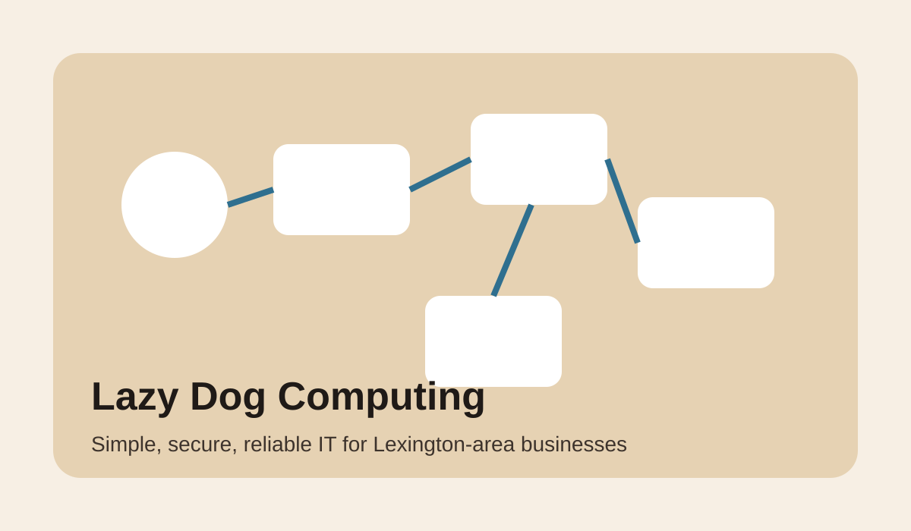

Lazy Dog Computing helps businesses in Lexington, Thomasville, Salisbury, High Point, and the surrounding area clean up old systems, strengthen security, move into modern Microsoft 365 environments, and keep everything running with less stress and less downtime.
We work with law firms, medical offices, financial businesses, manufacturers, and other small to midsize organizations that need real support without the noise of a call-center experience. Our approach is friendly and practical, but it is backed by serious tools and a clear process.

We design, secure, and support Microsoft 365 environments using the tools businesses actually need: Entra ID, Intune, Defender, SharePoint, OneDrive, and Teams. That means a cleaner tenant, stronger user access controls, and better day-to-day manageability.
We help align your Microsoft environment to meet CIS and other regulatory frameworks, and help you gather the evidence required to demonstrate compliance during audits. We also use Tenable and Nessus to help identify vulnerabilities that deserve attention.
With Veeam for backup and recovery, NinjaOne for monitoring and patching, and a practical ongoing service model, we help you reduce downtime risk and keep the business moving.
Most small businesses do not need flashy technology for its own sake. They need email that works, devices that stay secure, files that stay available, backups that restore when needed, and a clear path out of older systems that no longer fit the business. That is where we come in.
We created dedicated pages for legal, medical, financial, and manufacturing businesses because each of those verticals has different needs, different pressures, and different ways technology can either create friction or remove it.
| Vertical | Focus |
|---|---|
| Legal | Secure client files, dependable email, reduced downtime, stronger remote access |
| Medical | Managed devices, patient-data protection, cleaner access control, HIPAA support |
| Financial | Identity security, documentation, audit support, business continuity |
| Manufacturing | Reduced downtime, shared-device management, patching visibility, practical modernization |
Our local SEO and content strategy is built around the area where you are most likely to win business: Lexington, Davidson County, Thomasville, Salisbury, High Point, and nearby communities. The site content included in this pack is designed to support ranking for service, vertical, and local-intent searches, while also giving prospects enough substance to trust that they are contacting the right provider.
Dedicated service pages, location mentions, blog content, schema markup, internal links, and indexable contact information help search engines understand what you do and where you do it.
Friendly copy, a clear local angle, visible phone number, vertical-specific pages, and a straightforward request-for-information path make the site more useful for real buyers.
If you want a second opinion on your current setup, or you know you need to modernize an older environment, request more information and we will help you figure out the next step.